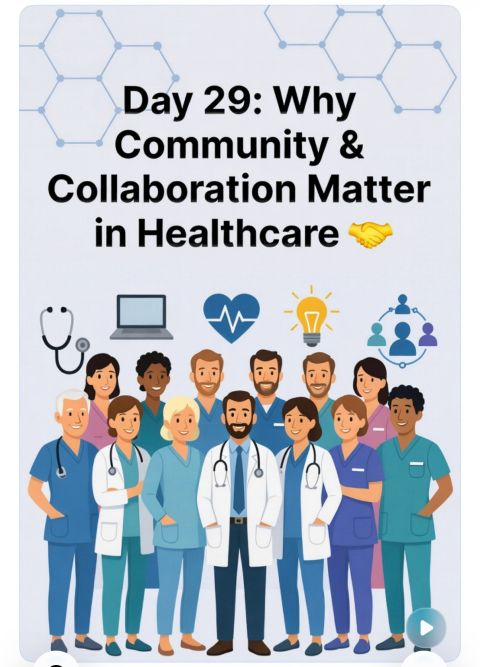
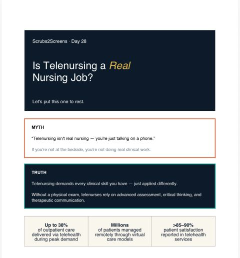
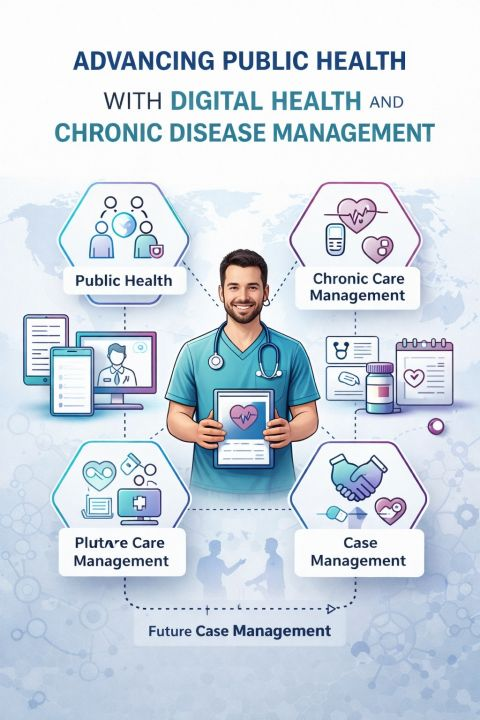
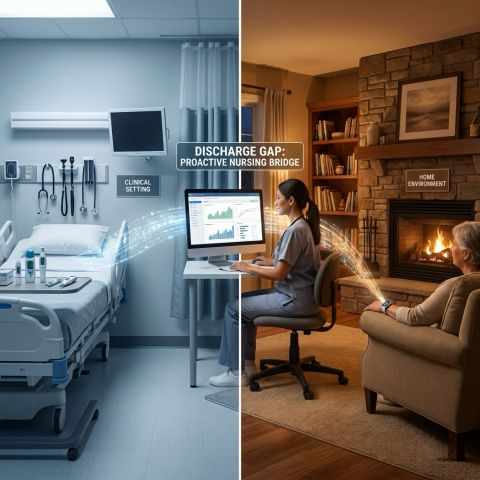

Registered Nurse (Renal)
Telehealth & Virtual Care Specialist
EMR/EHR Specialist | Patient Education Expert
3+
Years NHS
I am a Registered General Nurse with experience in renal care, delivering high-quality, patient-centred care in acute ward settings. My background in managing chronic kidney disease, dialysis patients, and complex comorbidities has strengthened my clinical assessment, patient education, and care coordination skills.
I am now transitioning into telemedicine and remote healthcare roles, where I can combine my clinical expertise with digital health systems. I am proficient in EMR/EHR platforms, comfortable with virtual documentation workflows, and fully compliant with HIPAA standards.
I am particularly interested in telehealth nursing, virtual triage, care coordination, and remote chronic disease management roles.
Royal Wolverhampton Hospitals NHS Trust
United Kingdom · On-site
Grandville Medical and Laser
Lagos State, Nigeria
HCC Ikoyi
Lagos State, Nigeria · Part-time
Citizen Medical Centre
University of Derby
School of Nursing NAUTH Nnewi, Anambra State, Nigeria
2016 - 2019
Documenting my journey from bedside to virtual care through the Scrubs2Screens community — sharing insights on telehealth, digital health, and the future of nursing.
Chidubem Esther Onu
13 hours ago
The biggest lesson I've learned about growth and career positioning: Growth is not just about working harder, it's about showing up smarter. Building meaningful professional relationships and aligning skills with future goals.

Chidubem Esther Onu
Day 29
In healthcare, no single professional has all the answers. True collaboration brings better patient outcomes, holistic care, reduced inefficiencies, and stronger support systems. Healthcare isn't a solo sport—it's a team effort that truly saves lives.

Chidubem Esther Onu
Day 28
"Telenursing isn't real nursing..." I've heard it before. Just your voice, questions, and clinical judgment. Virtual care forces you to sharpen what really matters—how you think, listen, and decide. Digital health isn't replacing nurses, it's just changing how we show up.

Chidubem Esther Onu
3 days ago
The future of healthcare isn't just about treatment—it's about prevention, connection, and continuity. Particularly interested in its impact on public health—improving access, supporting self-management, and enhancing long-term outcomes.
Chidubem Esther Onu
4 days ago
Telehealth isn't just nursing through a screen. It's nursing with the volume turned up on every skill that didn't require your hands. Virtual care documentation needs to be airtight. The nurses who thrive brought everything with them and learned to use it differently.

Chidubem Esther Onu
Day 24
I don't hate nursing. But I'm starting to question what it's costing me. By Sunday night, I'm not fully resting—part of me is already bracing. Is this sustainable long-term? There are other ways to be a nurse that might offer better work-life balance.
Chidubem Esther Onu
Day 23
Why Africa Needs Stronger Digital Health Systems. Exploring the gaps and opportunities for nurses and clinicians working in digital health across the African continent. The potential for transformation is immense.
Chidubem Esther Onu
Day 22
This journey has been made easier and more meaningful because of all of you. Grateful for the nursing community, mentors, and everyone supporting this transition from scrubs to screens.
Chidubem Esther Onu
Day 21
Bedside nursing felt like the only "real" nursing. But the more I learn about telenursing, the more I realize: The skills transfer. The impact is just as real. Remote nurses are triaging, coaching, catching deterioration, and reaching patients who can't get to a clinic.
Interested in connecting? I'm open to discussing telehealth opportunities, virtual care collaborations, or sharing insights about transitioning from bedside to digital health.
📍 Currently based in:
United Kingdom
Royal Wolverhampton Hospitals NHS Trust
🚀 Transitioning to telehealth and remote patient care roles